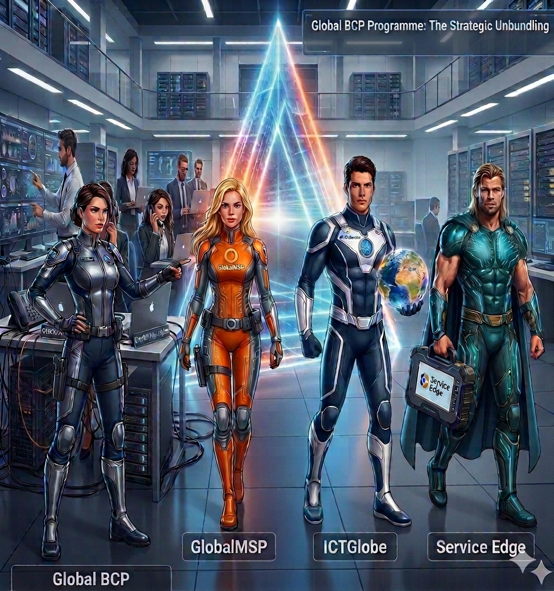

Topic 4: The "Human Element": Staff Adjustment & Culture
The Global BCP Programme was never intended to simply move individuals or groups; it was designed to evolve the business from a generalist model to a specialist powerhouse.

By separating into three distinct entities—ICTGlobe, Global MSP, and Service Edge—staff members now have the space to become experts in their specific fields. This structural clarity will ensure faster future growth without sacrificing operational strength.
4.1. Current Adjustment: Breaking "Muscle Memory"
The primary hurdle isn't ability; it is habit. Staff are still actively transitioning from the legacy "Generalist" world—where everyone handled everything—to a highly focused "Specialist" model.
The restructuring has naturally led to an expected period of staff adjustment. Operational success during this phase will be heavily reliant on the "Talent Review" scheduled for the 61–100 day window. Currently, service quality is being maintained through high-intensity training and targeted workshops.
Staff acknowledgment and ownership of these structural changes represent the most critical steps in moving from the "High-Alert" Hypercare phase to a stable, predictable business model.
To support this culture shift, the launch of the Global Insider serves not only as a monthly newsletter but strategically raises awareness of a unified, combined organizational view.
4.2. Human Resources, Compliance & Job Description Alignment
As the operational and staff-adjusted frameworks are finalized across all entities, the project team must maintain strict alignment with the organization's human capital requirements:
- Cross-Topic Sync (Topic 3, Technical & 4, HR): In alignment with the intercompany SLA technical tracking discussed in Topic 3, any precise operational requirements that alter an individual's day-to-day delivery must be explicitly accounted for.
- HR Communication Mandate: The final drafted operational and staff-adjusted frameworks must be formally communicated to Human Resources. This step is critical to ensure that all updated responsibilities are legally aligned with updated Job Descriptions (JDs), safeguarding compliance with all relevant employment laws.